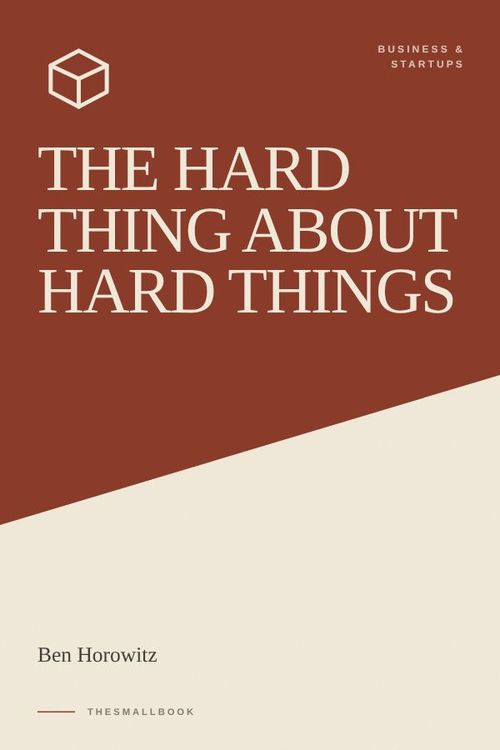

Why Did Zilingo Fail?
Southeast Asia's $970M Fashion Star Unraveled Over Paperwork
📜 What Happened
Zilingo made 27-year-old Ankiti Bose the celebrated face of Southeast Asian startups - a fashion supply-chain platform valued at $970M, one round from unicorn status. Then a routine fundraise due-diligence found the basics weren't there: financial statements hadn't been properly filed for years, revenue recognition was questioned, and the board suspended, then fired, the CEO amid contested harassment-complaint claims and counterclaims of a smear campaign. Funding froze, creditors seized assets, and the company was liquidated. Nobody was ever convicted - the company died of chaos, not verdicts.
☠️ The Fatal Mistake
Scaling the story faster than the accounting - leaving governance so thin that the first serious look inside became the fatal event.
🧠 The Lesson (Free for You)
Boring hygiene - filed accounts, clean books, functioning boards - is what lets a company survive scrutiny. If your startup can't handle due diligence, it isn't ready for the money it's asking for.
The Antidote Book

Most business books tell you how to do things right; Horowitz tells you what to do after everything has gone wrong. Drawing on nearly losing his company Loudcloud/Opsware multiple times before selling it for $1.6B, he…
📖 OPEN THE FULL INTERACTIVE BREAKDOWN →Questions people ask about Zilingo
Why did Zilingo fail? Scaling the story faster than the accounting - leaving governance so thin that the first serious look inside became the fatal event.
How much was lost? $300M+ raised; sold for parts
What is the lesson? Boring hygiene - filed accounts, clean books, functioning boards - is what lets a company survive scrutiny. If your startup can't handle due diligence, it isn't ready for the money it's asking for.
Zilingo kyun fail hua? In simple English: Scaling the story faster than the accounting - leaving governance so thin that the first serious look inside became the fatal event. The cost was $300M+ raised; sold for parts.
Keep digging
More startup failures · Open the full Graveyard
Read the antidote book summary: The Hard Thing About Hard Things
Related failures
- Why did 23andMe fail? 2025 · 15 Million DNA Profiles, No Second Act
- Why did Vice Media fail? 2024 · The $5.7B Media Rebel That Died of Believing Its Hype
- Why did Pepperfry fail? 2024 · 10 Years of Furniture E-Commerce, Ended by a Fire Sale
- Why did Lilium Jet fail? 2024 · $1.5B Burned on 36 Electric Jet Fans
- Why did Koo fail? 2024 · India's Twitter Died Waiting for Twitter to Die
- Why did Forward Health fail? 2024 · The AI Doctor's Office Closed Overnight
Questions people ask about Zilingo
Why did Zilingo fail? Scaling the story faster than the accounting - leaving governance so thin that the first serious look inside became the fatal event.
How much was lost? $300M+ raised; sold for parts
What is the lesson? Boring hygiene - filed accounts, clean books, functioning boards - is what lets a company survive scrutiny. If your startup can't handle due diligence, it isn't ready for the money it's asking for.
Zilingo kyun fail hua? In simple English: Scaling the story faster than the accounting - leaving governance so thin that the first serious look inside became the fatal event. The cost was $300M+ raised; sold for parts.
Keep digging
More startup failures · Open the full Graveyard
Read the antidote book summary: The Hard Thing About Hard Things
Related failures
- Why did 23andMe fail? 2025 · 15 Million DNA Profiles, No Second Act
- Why did Vice Media fail? 2024 · The $5.7B Media Rebel That Died of Believing Its Hype
- Why did Pepperfry fail? 2024 · 10 Years of Furniture E-Commerce, Ended by a Fire Sale
- Why did Lilium Jet fail? 2024 · $1.5B Burned on 36 Electric Jet Fans
- Why did Koo fail? 2024 · India's Twitter Died Waiting for Twitter to Die
- Why did Forward Health fail? 2024 · The AI Doctor's Office Closed Overnight
Searchable, filterable, simple to read - they paid billions; you get the lesson.